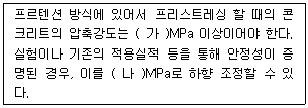
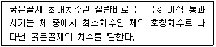
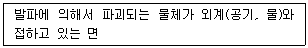
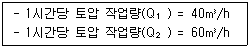
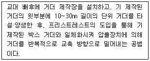
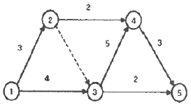
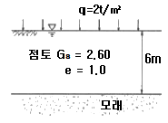
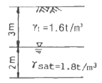

건설재료시험산업기사 (2017-09-23 기출문제)
1과목: 콘크리트공학
1. 콘크리트의 온도균열에 대한 시공상의 대책으로 잘못된 것은?
- 단위시멘트량을 많게 한다.
- 1회 타설 높이를 낮게 한다.
- 수축줄눈을 설치한다.
- 수화열이 낮은 시멘트를 사용한다.
(정답률: 69%)

2. 콘크리트의 배합을 정하는 경우에 목표로 하는 강도를 나타내는 용어는?
- 설계기준강도
- 공칭강도
- 배합강도
- 호칭강도
(정답률: 81%)
3. 고가도 콘크리트의 배합 및 시공에 대한 설명으로 틀린 것은?
- 일반적으로 콘크리트 타설 낙하높이는 1m 이하로 하는 것이 좋다.
- 보통 중량 콘크리트의 경우 설계기준 압축강도 50MPa 이상인 경우를 고강도 콘크리트라고 한다.
- 기상의 변화가 심하거나 동결융해에 대한 대책이 필요한 경우를 제외하고는 공기연행제를 사용하지 않는 것을 원칙으로 한다.
- 잔골재율은 소요의 워커빌리티를 얻도록 시험에 의하여 결정하여야 하며, 가능한 적게 하도록 한다.
(정답률: 72%)
4. 프리스트레스트 콘크리트(PCS)와 철근콘크리트(RC)의 비교 설명으로 틀린 것은?
- PCS는 RC에 비하여 훨씬 탄성적이고 복원성이 크다.
- PCS는 RC에 비하여 고강도의 콘크리트와 강재를 사용한다.
- PCS는 전 단면이 유효하게 이용되는데 비하여 RC는 단면의 중립축을 경계로 인장측의 콘크리트를 무시하고 설계한다.
- PCS는 RC에 비하여 설계, 제조, 운반, 가설이 쉽다.
(정답률: 63%)
5. 다음 중 습윤양생에 대한 설명으로 틀린 것은?
- 막양생에를 살포하는 방법
- 콘크리트에 직접 살수하는 방법
- 콘크리트 주위에 60℃의 증기를 뿜어주는 방법
- 가마니, 마대, 양생포를 덮고 그 위에 살수하는 방법
(정답률: 62%)
6. 하단이 구속된 벽조의 두께가 최소 얼마 이상인 경우에 매스콘크리트로 다루어야 하는가? (단, 일반적인 표준)
- 0.3m이상
- 0.5m이상
- 0.8m이상
- 1.0m이상
(정답률: 68%)
7. 30회의 압축강도 시험실적으로부터 구한 압축강도의 표준편차가 4MPa인 콘크리트의 배합강도는?(오류 신고가 접수된 문제입니다. 반드시 정답과 해설을 확인하시기 바랍니다.)
- 35.36 MPa
- 38.82 MPa
- 36.24 MPa
- 36.76 MPa
(정답률: 40%)
8. 일반 콘크리트를 2층 이상으로 나누어 타설할 때 외기온도가 25℃를 초과한다면, 허용 이어치기 시간간격의 표준으로 옳은 것은?(오류 신고가 접수된 문제입니다. 반드시 정답과 해설을 확인하시기 바랍니다.)
- 1시간
- 1시간 30분
- 2시간
- 2시간 30분
(정답률: 60%)
9. 시방배합결과 물-시멘트비가 50%, 시멘트 340kg/m3, 잔골재 700kg/m3, 굵은골재 1100kg/m3을 얻었다. 현장에 있는 잔골재 중 5mm체에 남는 것이 5%, 굵은골재 중 5mm체를 통과하는 것이 4%이고, 잔골재 및 굵은골재의 표면수가 각각 5%와 1% 일 경우 현장 배합상의 단위수량은?
- 112.6 kg/m3
- 118.6 kg/m3
- 121.3 kg/m3
- 124.4 kg/m3
(정답률: 37%)
10. 내부진동기를 사용하여 콘크리트를 다짐할 때 진동기는 아래 층 콘크리트 속에 얼마 정도 찔러 넣어야 하는가?
- 0.7m
- 0.5m
- 0.3m
- 0.1m
(정답률: 73%)
11. 프리스트레스트 콘크리트의 프리스트레싱 할 때의 콘크리트 강도에 대한 아래 표의 설명에 ( )안에 들어갈 수치로 옳은 것은?

- (가) 25, (나) 20
- (가) 30, (나) 25
- (가) 35, (나) 30
- (가) 40, (나) 35
(정답률: 72%)
12. 콘크리트 구조물 건설 시의 탄산화에 대한 대책으로 틀린 것은?
- 물-결합재비를 크게 한다.
- 콘크리트의 다지기를 충분히 한다.
- 철근 피복두께를 확보한다.
- 습윤양생을 한다.
(정답률: 65%)
13. 수밀성이 좋은 콘크리트를 만들기 위한 조치로서 적당하지 않는 것은?
- 물-결합재비를 증가시켜 콘크리트의 밀도를 촘촘하게 한다.
- 습윤양생을 실시하여 건조수축을 줄여 공극이 서로 연결되지 않게 한다.
- 좋은 품질의 AE제나 감수제를 사용한다.
- 블리딩 및 재료분리를 작게 한다.
(정답률: 52%)
14. 콘크리트 압축강도 시험에 대한 설명으로 틀린 것은?
- 강도시험용 공시체의 지름은 굵은골재의 최대 치수의 3배 이상, 100mm 이상으로 한다.
- 강도시험용 공시체를 캐핑하는 경우 캐핑층의 두께는 공시체 지름의 2%를 넘어서는 안 된다.
- 공시체의 하중을 가하는 속도는 압축 응력도의 증가율이 매초(0.6±0.4)MPa이 되도록 한다.
- 공시체가 급격한 변형을 시작한 후에는 하중을 가해서는 안 된다.
(정답률: 36%)
15. 벽 또는 기둥 등에서 콘크리트를 쳐 올라가는 속도는 30분에 얼마 정도로 하는 것이 적당한가?
- 0.5 ~ 1.0m
- 1.0 ~ 1.5m
- 1.5 ~ 2.0m
- 2.0 ~ 2.5m
(정답률: 77%)
16. 콘크리트의 쪼갬인장강도시험에서 공시체에 하중을 가하는 속도로써 옳은 것은?
- 인장응력의 증가율이 매초(0.06±0.04)MPa이 되도록 한다.
- 인장응력의 증가율이 매초(0.12±0.06)MPa이 되도록 한다.
- 인장응력의 증가율이 매초(0.3±0.1)MPa이 되도록 한다.
- 인장응력의 증가율이 매초(0.6±0.4)MPa이 되도록 한다.
(정답률: 77%)
17. 굳지 않은 콘크리트의 슬럼프 시험에 대한 설명으로 잘못된 것은?
- 시료를 거의 같은 양의 3층으로 나눠서 채우고 각 층은 다짐봉으로 고르게 한 후 25회 똑같이 다진다.
- 슬럼프콘은 밑면 내경이 200mm, 윗면 내강이 100mm, 높이가 300mm이다.
- 슬럼프콘을 벗기는 작업은 1초 내에 신속히 들어 올려야 한다.
- 슬럼프콘에 콘크리트를 채우기 시작해서 벗길 때까지는 전작업을 중단 없이 3분 이내로 끝마쳐야 한다.
(정답률: 78%)
18. 한중 콘크리트에 관한 설명으로 틀린 것은?
- 하루 평균기온이 4℃ 이하가 예상되는 조건일 때는 콘크리트가 동결할 염려가 있으므로 한중 콘크리트로 시공하여야 한다.
- 한중 콘크리트에는 AE 콘크리트를 사용하는 것을 원칙으로 한다.
- 가열한 재료를 믹싱할 때에는 먼저 시멘트, 굵은골재, 잔골재를 넣어서 건비빔한 다음 물을 넣는 것이 좋다.
- 응결경화 초기에 동결하지 않도록 양생에 주의하여야 한다.
(정답률: 78%)
19. 굳지 않은 콘크리트의 성질을 나타내는 용어에 대한 정의로써 옳은 것은?
- 반죽질기(consistency)란 수량의 다소에 반죽이 되고 진 강도를 말한다.
- 피니셔빌리티(finishability)란 반죽질기에 따른 작업의 난이도 및 재료분리에 저항하는 정도를 나타낸다.
- 성형성(plasticity)이란 골재의 최대치수, 잔골재율, 잔골재의 입도, 반죽질기에 따르는 마무리하기 쉬운 정도를 말한다.
- 워커빌리티(orkability)란 거푸집에 쉽게 다져 넣을 수 있고, 거푸집을 제거하면 천천히 형상이 변하기는 하지만 허물어지거나, 재료가 분리하지 않는 정도로 나타낸다.
(정답률: 70%)
20. 어떤 실험실에서 제조된 콘크리트에 대한 28일 압축강도의 평균이 19.5MPa 이고, 표준편차가 0.4MPa 이었다면 변동계수는 약 얼마인가?
- 1%
- 2%
- 5%
- 10%
(정답률: 69%)
2과목: 건설재료 및 시험
21. 다음 시험용 기구 중 잔골재의 밀도 및 흡수율 시험과 관계 없는 것은?
- 플라스크
- 철망태
- 원뿔형 몰드나 다짐봉
- 데이케이터
(정답률: 61%)
22. 시멘트의 성질에 관한 설명 중 옳지 않은 것은?
- 석고의 혼합량에 따라 응결시간이 달라진다.
- 보통포틀랜드 시멘트의 비중은 약 3.15 정도이다.
- 온도가 높을수록 응결을 빨라진다.
- 분말도가 높을수록 수축 균열이 적어진다.
(정답률: 68%)
23. 목재의 주요 성분 중에서 가장 많은 양을 차지하는 것은?
- 셀룰로오스
- 리그닌
- 탄닌
- 수지
(정답률: 76%)
24. 뇌관류와 더불어 산업용 폭약을 기폭시키는 화공품류로써 가공 제어발파 및 ANFO 장전 시정전기에 의한 위험 개소 및 기타 전긴뇌관을 사용할 수 없는 곳에서 기폭용 및 폭약 대체용으로 사용하는 것은?
- 도폭선
- 정밀폭약
- MS뇌관
- 다이나마이트
(정답률: 73%)
25. 화산회 또는 화산사가 퇴적 고결된 암석으로 내화성이 크고 풍화되어 실트질의 흙이 되는 암석은?
- 혈암
- 응회암
- 점판암
- 천매암
(정답률: 76%)
26. 일반콘크리트 굵은 골재의 최대 치수에 관한 설명으로 틀린 것은?
- 일반적인 경우 20mm 또는 25mm가 표준이다.
- 슬래브 두께의 1/3을 초과해서는 안 된다.
- 거푸집 양 측면 사이의 최소 거리의 1/2을 초과해서는 안 된다.
- 무근 콘크리트의 경우 부재 최소 치수의 1/4을 초과해서는 안 된다.
(정답률: 47%)
27. 석재의 역학적 성질에 관한 설명 틀린 것은?
- 석재는 일반적으로 인장강도보다 압축강도가 크다.
- 석재의 압축강도는 일반적으로 함수상태에 따라 변한다.
- 석재는 일반적으로 열전도율이 금속에 비해 크다.
- 석재의 내구성은 일반적으로 화학적, 물리적, 기계적 작용 등에 영향을 받는다.
(정답률: 66%)
28. 다음 혼화재료 중 사용량이 비교적 많아 콘크리트의 배합 설계에 고려해야 되는 혼화재료는?
- AE제
- 응결경화촉진제
- 포졸란
- 급결제
(정답률: 66%)
29. 알루미나시멘트의 특성에 관한 설명 중 옳지 않은 것은?
- 초조강성을 가진다.
- 산, 염류, 해수 등의 화학적 침식에 대한 저항성이 크다.
- 응결 및 경화 시 발열량이 매우 작으므로 하절기 공사에 적합하다.
- 내화성이 우수하므로 내화물용으로 사용된다.
(정답률: 64%)
30. 길이 ℓ=10cm, 폭 b=5cm인 봉을 인장하였더니 길이 11.5cm 이고, 폭 b=4.8cm가 되었다. 포아송 비는?
- 약 11.50
- 약 3.75
- 약 0.96
- 약 0.27
(정답률: 36%)
31. 아래의 표는 굵은골재 최대치수의 정의에 대한 설명이다. ( )안에 들어갈 적합한 수치로 옳은 것은?

- 95
- 90
- 85
- 80
(정답률: 65%)
32. 폭약을 다룰 때 주의할 사항 중 틀린 것은?
- 운반 중에 충격을 주어서는 안 된다.
- 뇌관과 폭약은 같은 장소에 보관한다.
- 장기간 보존 시 흡수 동결이 되지 않도록 한다.
- 다이나마이트는 햇빛을 직접 쬐지 않도록 한다.
(정답률: 87%)
33. 아스팔트 신도 및 시험에 대한 설명 중 틀린 것은?
- 아스팔트의 늘어나는 능력을 나타내며, 연성의 기준이 된다.
- 시료 양 끝을 규정온도 및 속도로 잡아당겨 끊어질 때까지 늘어난 길이로 측정한다.
- 시험온도에 따라 크게 변하므로 측정 시 온도를 일정하게 하여야 한다.
- 블론아스팔트는 신도가 아주 크나, 스트레이트아스팔트의 신도는 작다.
(정답률: 73%)
34. 토목섬유의 주를 이르고 있으며 폴리에스테르, 폴리에틸렌, 폴리프로필렌 등의 합성섬유를 직조하여 만든 다공성 직물은?
- 지오텍스타일
- 지오멤브레인
- 지오그리드
- 지오컴포지트
(정답률: 39%)
35. 콘크리트와의 부착강도를 증진시키기 위해 표면에 요철을 붙인 철근은?
- 원형철근
- PC강선
- 이형철근
- PC강연선
(정답률: 81%)
36. 건설공사에 사용되는 그라우트(grout)용 혼화제로써 필요한 성질을 나열한 것 중 옳지 않은 것은?
- 그라우트를 수축시켜야 한다.
- 블리딩(bleeding)이 없어야 한다.
- 재료의 분리가 없어야 한다.
- 그라우트 주입이 쉬워야 한다.
(정답률: 78%)
37. 다음 중 촉진제를 사용하여야 하는 경우로서 적합하지 않은 것은?
- 서중콘크리트
- 조기 강도를 필요로 하는 공사
- 숏크리트
- 기간 단축을 필요로 하는 공사
(정답률: 65%)
38. 다음 중 천연 아스팔트가 아닌 것은?
- 록 아스팔트(rock asphalt)
- 샌드 아스팔트(sand asphalt)
- 레이크 아스팔트(lake asphalt)
- 블로운 아스팔트(blown asphalt)
(정답률: 79%)
39. 르샤틀리에(Le Chatelier) 비중병의 0.7cc 눈금까지 석유를 주입하고 시멘트 64g을 투입하여 눈금이 21.7cc로 증가되었다. 이 시멘트의 비중은 다음 중 얼마인가?
- 3.00
- 3.⑤
- 3.10
- 3.15
(정답률: 66%)
40. 아스팔트 혼합물에 대한 물성시험으로 볼 수 없는 것은?
- 휠트래킹시험
- 마샬 안정도시험
- 이론밀도시험
- Pri 시험
(정답률: 50%)
3과목: 건설시공학
41. 발파공에 사용되는 용어 중 아래의 표에서 설명하고 있는 것은?

- 누두반경
- 임계심도
- 자유면
- 최소저항선
(정답률: 60%)
42. 아래 표와 같은 조건에서 불도저로 압토와 리핑 작업을 동시에 실시할 경우 시간당 작업량은?

- 24 m3/h
- 28 m3/h
- 37 m3/h
- 50 m3/h
(정답률: 68%)
43. 불도저로 운반거리가 50m 이고, 밀어가는 속도 V1=36m/min, 후퇴하는 속도 V2=42m/min 이고, 또 대기시간 t=0.25min 이라 할 때 싸이클타임(Cm)은?
- 2.52 min
- 2.66 min
- 2.75 min
- 2.83 min
(정답률: 62%)
44. 용수를 동반하는 연약지반에 철체원통을 수평방향으로 책에 의하여 추진하면서 굴진하는 터널굴착 방법은?
- 아일랜드 공법
- 쉴드 공법
- NATM 공법
- 트렌치 컷 공법
(정답률: 62%)
45. 1개의 간섭집수거 또는 집수지거로 될 수 있으면 많은 흡수거를 합류시키게 배치한 암거배열 방식은?
- 자연식 배열
- 빗식 배열
- 차단식 배열
- 어골(魚骨)식 배열
(정답률: 73%)
46. 댐축조 공사에서 계회겆수량 이상으로 유입되는 홍수량을 안전하게 방류할 수 있도록 설치하는 것을 무엇이라 하는가?
- 검사랑
- 여수로
- 취수로
- 조절부
(정답률: 62%)
47. 말뚝 기초공사에서 다수의 말뚝을 타입할 때 말뚝의 시공순서로 옳은 것은?
- 중앙부의 말뚝부터 외측으로 향해서 차례로 타입한다.
- 중앙부 1본 타입 후 최외측 1본 타입, 즉 중앙부와 외측을 교차로 타입한다.
- 기본 건물과 가까운 경우 외측에서 시작하여 구조물 쪽으로 타입한다.
- 잔교나 부두공사에서처럼 경사진 지표는 낮은 쪽을 먼저 타입하기 시작하여 높은 쪽으로 진행한다.
(정답률: 55%)
48. 두꺼운 연약 지반의 처리공법 중 점성토로서 압밀 속도가 극히 늦을 경우에 가장 적당한 공법은?
- 바이브로폴로테이션(Vibro-flotation) 공법
- 제거 치환 공법
- 전기충격 공법
- 버티컬드레인(Vertical drain) 공법
(정답률: 63%)
49. 다음 중 기초말뚝 중 타입방벙이 다른 것은?
- benoto 말뚝
- P.C 말뚝
- 원심력 철근콘크리트 말뚝
- 강관 말뚝
(정답률: 57%)
50. 아래 표에서 설명하는 콘크리트 교량의 가설공법 명칭은?

- FCM
- FSM
- ILM
- MSS
(정답률: 55%)
51. 교량가설 시 비계를 사용하는 공법이 아닌 것은?
- 새들 공법
- 벤트 공법
- 이랙션 트러스 공법
- 부선식 공법
(정답률: 48%)
52. 본바닥 토량 400m3을 덤프트럭 2대로 운반하면 운반소요 일수는 몇 일인가? (단, 1대 운반 적재량은 4m3, 1일 1대당 운반회수를 5회, L=1.20 이다.)
- 6
- 8
- 10
- 12
(정답률: 10%)
53. 토취장(Borrow-Pit) 선정 시 고려사항으로 옳지 않은 것은?
- 토질이 양호할 것
- 토량이 충분할 것
- 성토장소 방향으로 상향구배(1/50~1/100)일 것
- 장애물이 적고, 유지관리가 용이할 것
(정답률: 72%)
54. 도로포장 두께를 결정하는 시험 방법이 아닌 것은?
- 평판재하시험
- CBR시험
- 벤켈먼빔시험
- 마샬시험
(정답률: 39%)
55. 역 T형 옹벽에 대한 설명으로 옳은 것은?
- 자중과 저판 위의 흙 중량으로 토암에 저항한다.
- 자중만으로 토압에 저항한다.
- 일바넉으로 옹벽의 높이가 낮은 경우에 사용된다.
- 자중이 다른 방식보다 대단히 크다.
(정답률: 42%)
56. 옹벽의 시공에 대한 설명으로 옳은 것은?
- 기초는 견고한 지반이 아니어도 된다.
- 뒤채움 돌은 다짐을 할 필요가 없다.
- 수발공은 매워지지 않게 해야 한다.
- 배면에는 지표수가 잘 침투하도록 하여야 한다.
(정답률: 50%)
57. 콘크리트 포장과 비교한 아스팔트 포장의 장점으로 틀린 것은?
- 주행성이 우수하다.
- 유지보수비가 적다.
- 포장 시 양생기간이 거의 필요하지 않다.
- 소음이 적고 외관이 좋다.
(정답률: 73%)
58. 오픈케이슨의 침하공법이 아닌 것은?
- 재하중에 의한 공법
- 웰포인트 공법
- 분기식 공법
- 물하중식 공법
(정답률: 57%)
59. 하빙(Heaving)의 방지대책에 대한 설명으로 틀린 것은?
- 흙막이벽의 관입 깊이를 작게 한다.
- 케이슨(casson)공법을 사용한다.
- 연약 지반을 개량한다.
- 굴착면에 하중을 가한다.
(정답률: 49%)
60. 아래 그림과 같은 공정표에서 주공정이 옳게 표기된 것은?

- ① → ② → ④ → ⑤
- ① → ③ → ④ → ⑤
- ① → ③ → ⑤
- ① → ② → ③ → ⑤
(정답률: 85%)
4과목: 토질 및 기초
61. 다음 중 얕은 기초는?
- Footing 기초
- 말뚝기초
- Caison 기초
- Pir 기초
(정답률: 63%)
62. 흙의 다짐에 대한 설명으로 틀린 것은?
- 사질토의 최대 건조단위중량은 점성토의 최대 건조단위중량 보다 크다.
- 점성토의 최적함수비는 사질토의 최적함수비보다 크다.
- 영공기 간극곡선은 다짐곡선과 교차할 수 없고, 항상 다짐곡선의 우측에만 위치한다.
- 유기질 성분을 많이 포함할수록 흙의 최대 건조단위중량과 최적함수비는 감소한다.
(정답률: 46%)
63. 다음의 토질 시험 중 투수계수를 구하는 시험이 아닌 것은?
- 다짐시험
- 변수두 투수시험
- 압밀시험
- 정수두 투수시험
(정답률: 50%)
64. 질편법에 의한 사면의 안정해석 시 가장 먼저 결정되어야 할 사항은?
- 가상활동면
- 절편의 중량
- 활동면상의 점착력
- 활동면상의 내부마찰각
(정답률: 65%)
65. 다음 그림에서 점토 중앙 단면에 작용하는 유효압력은?

- 1.2 t/m2
- 2.5 t/m2
- 2.8 t/m2
- 4.4 t/m2
(정답률: 30%)
66. 앝은기초의 근입심도를 깊게 하면 일반적으로 기초지반의 지지력은?
- 증가한다.
- 감소한다.
- 변화가 없다.
- 증가할 수도 있고, 감소할 수도 있다.
(정답률: 58%)
67. 그림과 같은 지반에서 깊이 5m 지점에서의 전단 강도는? (단, 내부마찰각은 35°, 점착력은 0 이다.)

- 3.2 t/m2
- 3.8 t/m2
- 4.5 t/m2
- 6.3 t/m2
(정답률: 30%)
68. rod에 붙인 어떤 저항체를 지중에 넣어 타격관입, 인발 및 회전할 때의 저항으로 흙의 전단강도 등을 측정하는 원위치 시험을 무엇이라 하는가?
- 보링(boring)
- 사운딩(sounding)
- 시료채취(sampling)
- 비파괴 시험(NDT)
(정답률: 64%)
69. 어떤 흙의 습윤단위중량(γt)은 2.0 t/m3이고, 함수비는 18%이다. 이 흙의 건조단위중량(γd)은?
- 1.61 t/m3
- 1.69 t/m3
- 1.75 t/m3
- 1.84 t/m3
(정답률: 62%)
70. 다음 시험 중 흐트러진 시료를 이용한 시험은?
- 전단강도시험
- 압밀시험
- 투수시험
- 에터버그 한계시험
(정답률: 44%)
71. 압밀에 걸리는 시간을 구하는데 관계가 없는 것은?
- 배수층의 길이
- 압밀계수
- 유효응력
- 시간계수
(정답률: 41%)
72. 다음 중 지지력이 약한 지반에서 가장 적합한 기초형식은?
- 독립확대기초
- 전면기초
- 복합확대기초
- 연속확대기초
(정답률: 66%)
73. 점토 지반에서 직경 30cm의 평판재하시험 결과 30t/m2의 압력이 작용할 때 침하량이 5mm라면, 직경 1.5m의 실제 기초에 30t/m2의 하중이 작용할 때 침하량의 크기는?
- 2mm
- 5mm
- 14mm
- 25mm
(정답률: 33%)
74. 유선망을 작도하는 주된 목적은?
- 침하량의 결정
- 전단강도의 결정
- 침투수량의 결정
- 지지력의 결정
(정답률: 56%)
75. 흙을 다지면 기대되는 효과로 거리가 먼 것은?
- 강도 증가
- 투수성 감소
- 과도한 침하 방지
- 함수비 감소
(정답률: 48%)
76. 미세한 모래와 실트가 작은 아치를 형성한 고리모양의 구조로써 간극비가 크고, 보통의 정적 하중을 지탱할 수 있으나 무거운 하중 또는 충격하중을 받으면 흙구조가 부서지고 큰 침하가 발생되는 흙의 구조는?
- 면모구조
- 벌집구조
- 분산구조
- 단립구조
(정답률: 60%)
77. 랭킨 토압론의 가정으로 틀린 것은?
- 흙은 비압축성이고 균질이다.
- 지표면은 무한히 넓다.
- 흙은 입자간의 마찰에 의하여 평형조건을 유지한다.
- 토압은 지표면에 수직으로 작용한다.
(정답률: 43%)
78. 동수경사(i)의 차원은?
- 무차원이다.
- 길이의 차원을 갖는다.
- 속도의 차원을 갖는다.
- 면적과 같은 차원이다.
(정답률: 55%)
79. 전단시험법 중 간극수압을 측정하여 유효응력으로 정리하면 압밀배수 시험(CD-test)과 거의 같은 전단상수를 얻을 수 있는 시험법은?
- 비압밀 비배수시험(UU-test)
- 직접전단시험
- 압밀 비배수시험(CU-test)
- 일축압축시험(qu-test)
(정답률: 60%)
80. 흙의 일축압축시험에 관한 설명 중 틀린 것은?
- 내부 마찰각이 적은 점토질의 흙에 주로 적용된다.
- 축방향으로만 압축하여 흙으 파괴시키는 것이며 σ3=0일 때의 삼축압축시험이라고 할 수 있다.
- 압밀비배수(CU)시험 조건이므로 시험이 비교적 간단하다.
- 흙의 내부마찰각 ø는 공시체 파괴면과 최대 주응력면 사이에 이루는 각 θ를 측정하여 구한다.
(정답률: 42%)